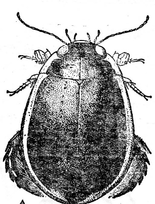
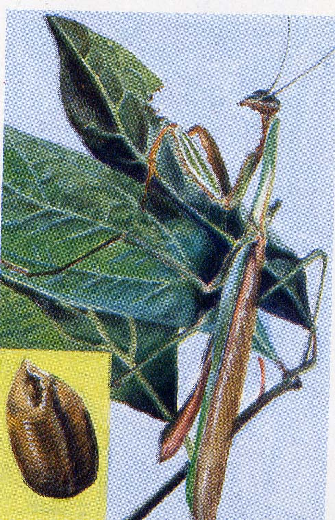
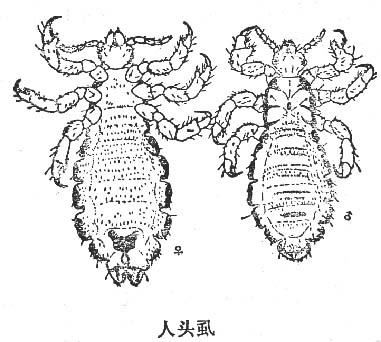
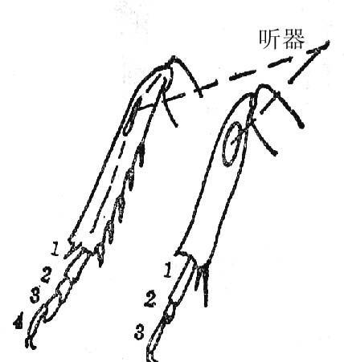
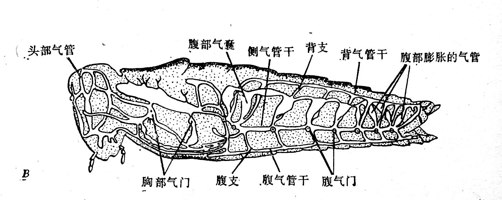
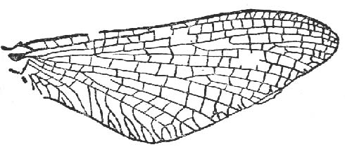
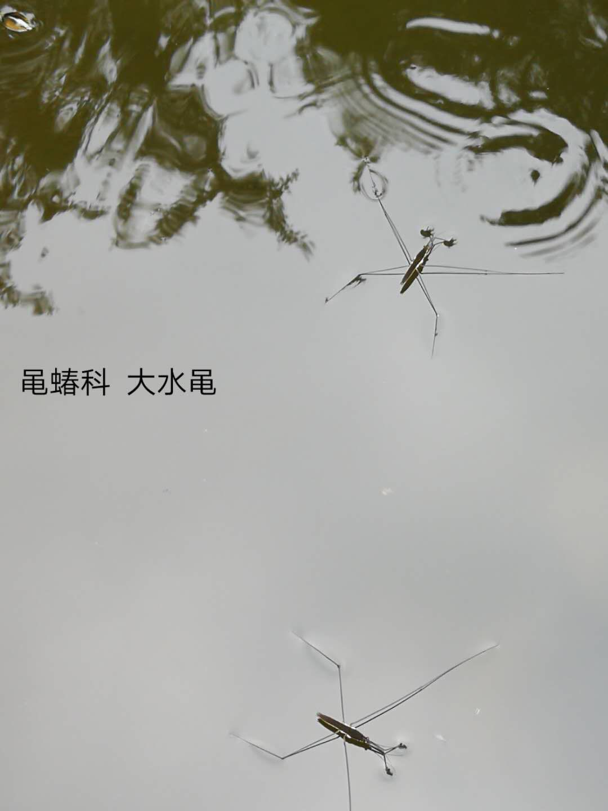
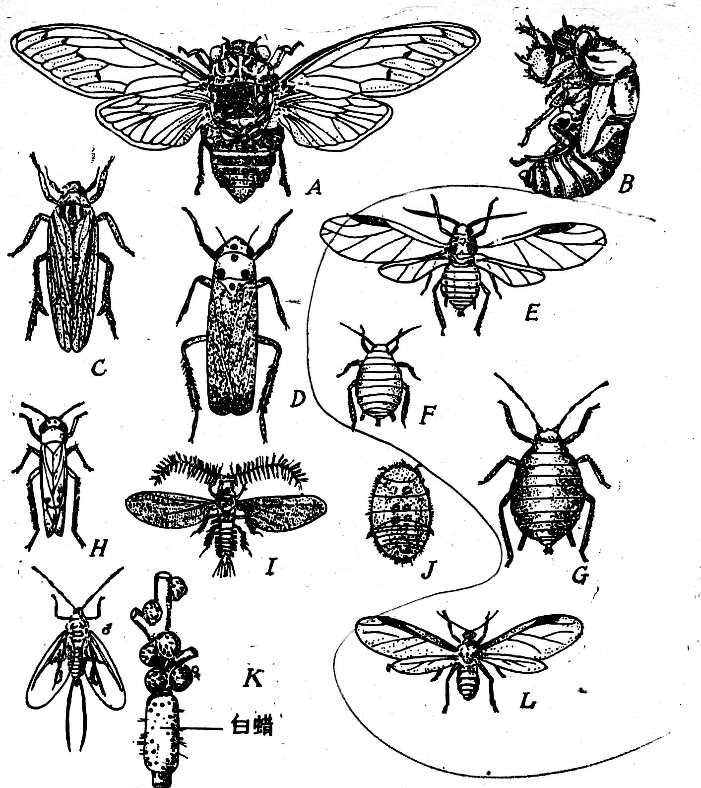
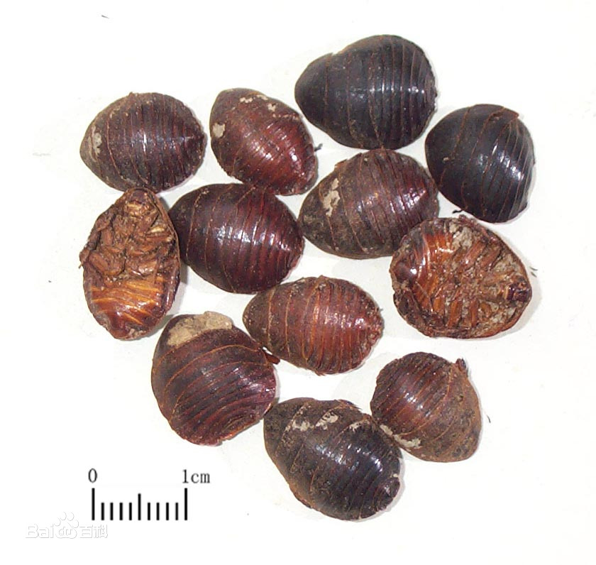

六足动物 / 真正征服陆地的类群
一、昆虫纲在动物界的地位
昆虫纲（Insecta）是物种数最丰富的动物类群，已描述种类超过 100 万种，估计实际种类可达 500–1000 万种，占整个动物界已知种类的 80% 以上。
- 分布：几乎遍布所有生境——陆地、淡水、空中、土壤、动植物体内外；是唯一真正征服了陆地与天空的无脊椎动物类群。
- 陆地霸主：陆生种类占绝对主导，水生种类相对较少（如龙虱、蜉蝣稚虫）。
- 分类位置：属于节肢动物门、有颚亚门、六足总纲（Hexapoda），故又称"六足动物"。
- 与人类关系：传粉、寄生、农业害虫、疾病媒介、丝绸/蜂蜜/蚕丝生产、药用、模式生物（果蝇）。
二、昆虫纲的基本特征
1. 身体分部：头、胸、腹三部分，高度异律分节。
2. 头部附肢（4 对，合为口器）：
- 1 对触角（antenna）—— 触觉与嗅觉
- 1 对大颚（mandible / 上颚）
- 1 对小颚（maxilla / 下颚）
- 1 对下唇（labium，由第二对小颚愈合而成）
上述附肢 + 上唇（1）、舌（1）共同构成口器（mouthparts）。
3. 胸部：3 节，前胸、中胸、后胸，每节腹面各 1 对足（thoracic legs）—— 共 3 对足，是"六足动物"名称的由来。
4. 翅：中胸与后胸通常各具 1 对翅（forewing / hindwing），共 2 对翅，由体壁外突形成；部分类群翅退化（如虱、跳蚤）或仅 1 对（如双翅目后翅退化为平衡棒）。
5. 腹部：一般 11 节（部分愈合），无足，是消化、生殖、呼吸、排泄的中心。腹末有外生殖器（产卵器/交配器）。
6. 呼吸系统：气管系统（tracheal system），由气门（spiracle）通外界。蝗虫有 10 对气门（胸部 2 对、腹部前 8 节各 1 对）。气管末端为微气管，不依赖血液运输氧气。
7. 循环系统：开放式循环，背血管（心脏+动脉）位于消化道背侧；血淋巴无血红蛋白（少数摇蚊幼虫有血红蛋白），主要输送营养和激素。
8. 排泄系统：马氏管（Malpighian tubule），中后肠交界处伸出细管，起源于外胚层，从血淋巴中吸收尿酸排入肠腔。蝗虫约 200 条。

口器 5 类型 / 翅 5 类型 / 足多种特化
三、口器类型（高频考点）
口器由头部 6 种基本结构（上唇 1 + 大颚 1 对 + 小颚 1 对 + 下唇 1 + 舌 1）演变而来。不同食性昆虫的附肢特化方向不同：
- 咀嚼式口器（chewing / mandibulate）——最原始、最常见。代表：蝗虫、蟋蟀、螳螂、甲虫、白蚁。大颚发达，可切碎固体食物。
- 刺吸式口器（piercing-sucking）—— 下唇延长成喙（proboscis），大、小颚特化为口针。代表：蚊、蝉、蝽、蚜虫。吸食动物血液或植物汁液。
- 虹吸式口器（siphoning）——由下颚特化，卷曲成吸管状喙；大颚退化或消失；不取食时卷曲如钟表发条。代表：蝶、蛾成虫。
- 舐吸式口器（sponging）—— 上下唇特化为发达唇瓣（喙，像"吸管"），可舐食液体食物。代表：家蝇。
- 嚼吸式口器（chewing-lapping）—— 同时保留咀嚼与吸食功能：大颚用于咀嚼花粉筑巢，下颚与下唇组成吸管吸花蜜。代表：蜜蜂。



四、翅的类型
昆虫的翅由体壁外突折叠形成双层结构，内含气管形成的翅脉（翅脉类型是分目的重要依据）。按质地分：
- 膜翅（membranous）—— 翅膜质透明，翅脉清晰。代表：蜂、蚂蚁、蜻蜓（膜翅目、蜻蜓目）。
- 鳞翅（scaly）—— 翅面密被鳞片（鳞粉），由毛特化而来。代表：蝶、蛾（鳞翅目）。
- 鞘翅（elytron）—— 前翅角质化，坚硬如甲，无翅脉，仅保护后翅。代表：甲虫（鞘翅目，动物界最大目）。
- 半鞘翅（hemelytron）—— 前翅基部革质、端部膜质。代表：蝽（半翅目，又称异翅目）。
- 革翅（复翅）（tegmen）—— 前翅革质、较厚，仍有翅脉；后翅膜质折叠。代表：蝗虫、蟋蟀（直翅目）。
- 平衡棒（haltere）—— 后翅退化为小棍状，具平衡体重的功能。代表：双翅目（蝇、蚊）。双翅目是唯一只有 1 对功能翅的目。


五、足的特化（附肢特化适应生活方式）
昆虫胸足由基节、转节、腿节、胫节、跗节、前跗节组成。足型可作为分科依据：
- 步行足：细长适于行走——步行虫、蜚蠊
- 跳跃足：后足腿节发达、肌肉粗大——蝗虫
- 捕捉足：前足腿节/胫节形成"铡刀"状——螳螂
- 开掘足：前足粗短、胫节扁宽如铲——蝼蛄（地下穴居）
- 游泳足：扁平、缘毛密生——龙虱、豉甲
- 攀援足 / 握器足：跗节特化为弯钩——人头虱
- 携粉足：后足胫节外侧有"花粉篮"，跗节第 1 节有"花粉刷"——蜜蜂

消化 / 呼吸 / 循环 / 排泄 / 神经 / 感觉 / 生殖
六、蝗虫的内部解剖（代表动物综合案例）
1. 消化系统（完全消化管，有口有肛门）：
唾液腺开口于口；胃盲囊（6 个）增加中肠消化吸收面积。
2. 呼吸系统：气管系统，由10 对气门（胸部 2 对 + 腹部 1–8 节各 1 对）通外界；气门有开闭机构防止水分散失。气管分支末端为微气管（直径 1 μm 以下），直接与组织细胞进行气体交换。
3. 循环系统：开放式循环。背血管 = 心脏（位于腹部背侧 8 个心室） + 1 条动脉（开口于头部血窦）。血淋巴由心孔入心，经动脉、血腔、心孔回流。血淋巴无血红蛋白，含血细胞（haemocyte），主要功能是运送营养、激素、免疫细胞。
4. 排泄系统：马氏管（约 200 条），从血淋巴中吸收尿酸、K⁺、Na⁺ 排入后肠；直肠重吸收水分和无机盐。
5. 神经系统：链状神经。脑（食道上神经节，由 3 对神经节愈合） + 围食道神经环 + 腹神经索（咽下神经节 + 胸部 3 对神经节 + 腹部若干对神经节）。
6. 感觉器官：
- 复眼：由众多小眼（ommatidium）组成。日出性昆虫成并列像（如蝇），夜出性成重叠像（如蛾）。
- 单眼：3 个（头顶 1 个 + 两复眼间各 1 个），感光。
- 触角：触觉与嗅觉，寻找配偶、寄主。
- 听觉器：蝗虫位于腹部第 1 节两侧（鼓膜听器）；蟋蟀/螽斯位于前足胫节。
- 味觉器：舌部、小颚须；嗅觉器：触角。
7. 生殖系统：雌雄异体，体内受精，卵生（少数胎生，如蚜虫）。雌性具卵巢、输卵管、阴道、储精囊、受精囊；雄性具精巢、输精管、贮精囊、射精管、交配器。


无变态 / 不完全变态 / 完全变态
七、变态类型（高频考点）
昆虫的胚后发育（postembryonic development）从幼体到成虫在形态上发生的剧烈变化称为变态。按是否经历蛹期分为三大类：
- 无变态（ametabola / 表变态）—— 幼体与成虫形态、生活习性基本相似，仅体型与性器官逐渐成熟。代表：缨尾目衣鱼、弹尾目（原属昆虫，现归入六足总纲的近昆虫类）。
- 不完全变态（半变态）（hemimetabola）—— 生活史：卵 → 若虫（nymph）（水生类群称为稚虫，如蜻蜓的"水虿"） → 成虫。若虫形态似成虫、翅芽逐渐发育，无蛹期。代表：直翅目（蝗虫、蟋蟀）、蜻蜓目、半翅目（蝽、蝉）、同翅目、螳螂目、蜚蠊目。
- 完全变态（holometabola）—— 生活史：卵 → 幼虫（larva） → 蛹（pupa） → 成虫。幼虫与成虫形态、习性差异极大，必须经过蛹期完成剧烈组织重组。代表：鳞翅目（蝶、蛾）、鞘翅目（甲虫）、膜翅目（蜂、蚁）、双翅目（蝇、蚊）。蛹又分裸蛹（被蛹）（如蝶，附肢粘于体上）、离蛹（裸蛹）（如甲虫，附肢游离）、围蛹（如蝇，最后一龄幼虫的皮形成蛹壳）。

100+ 万种 / 30+ 个目 / 主要 8 大目
八、昆虫纲的目级分类
昆虫纲分 2 个亚纲，30+ 个目。分目的主要依据：①翅的有无与质地；②口器类型；③变态类型；④触角构造；⑤足/产卵器构造。
1. 无翅亚纲（Apterygota）：原始小昆虫，无翅、无变态。代表目：缨尾目（衣鱼）、弹尾目。
2. 有翅亚纲（Pterygota）：有翅或翅退化，有变态。代表目：
| 目名 | 代表动物 | 口器 | 翅 | 变态 | 主要特征 |
|---|---|---|---|---|---|
| 直翅目 | 蝗虫、蟋蟀、蝼蛄、螽斯 | 咀嚼式 | 前翅革质（覆翅）、后翅膜质 | 不完全变态（渐变态） | 后足跳跃足；发音器；产卵器（刀、矛、瓣状） |
| 鞘翅目 | 甲虫（动物界最大目，约 40 万种） | 咀嚼式 | 前翅鞘翅、后翅膜质 | 完全变态 | 触角多样（丝、膝、鳃、锯齿）；幼虫多型 |
| 鳞翅目 | 蝶、蛾（第二大目） | 成虫虹吸式 / 幼虫咀嚼式 | 鳞翅 | 完全变态 | 翅面密被鳞片；幼虫 3 对胸足+腹足 |
| 膜翅目 | 蜂、蚂蚁 | 咀嚼式 / 嚼吸式 | 膜翅，前后翅以翅钩相连 | 完全变态 | 产卵器特化为螫刺；社群行为（蜜蜂、蚂蚁） |
| 双翅目 | 蝇、蚊、蚋、蠓 | 刺吸式 / 舐吸式 | 前翅膜质、后翅平衡棒 | 完全变态 | 幼虫称"蛆"；蚊传疟疾/登革热、蝇传伤寒/痢疾 |
| 半翅目 | 蝽、臭虫、猎蝽、水黾、田鳖 | 刺吸式 | 前翅半鞘翅、后翅膜质 | 不完全变态 | 臭腺发达；陆生/水生；肉食/植食 |
| 同翅目* | 蝉、叶蝉、飞虱、蚜虫、白蜡虫 | 刺吸式 | 前翅质地均匀、屋脊状 | 不完全变态（无蛹期） | 蜡腺发达；蚜虫孤雌+两性繁殖 |
| 蜻蜓目 | 蜻蜓、豆娘 | 咀嚼式 | 2 对膜质翅、翅痣 | 不完全变态（半变态） | 稚虫水虿，下唇特化为"脸盖"捕食 |
| 螳螂目 | 螳螂 | 咀嚼式 | 前翅稍厚、臀叶；后翅柔软 | 不完全变态 | 前足捕捉足；卵鞘（螵蛸） |
| 蜚蠊目 | 蟑螂、地鳖 | 咀嚼式 | 前翅革质、后翅膜质 | 不完全变态 | 扁平、夜行；传播病原 |
| 等翅目 | 白蚁 | 咀嚼式 | 前后翅相似膜质 | 不完全变态 | 触角念珠状；真社会性（蚁后、工蚁、兵蚁） |
| 脉翅目 | 草蛉、蚁狮 | 咀嚼式 | 膜翅、翅脉网状 | 完全变态 | 幼虫捕食蚜虫（"蚜狮"） |
| 蚤目 | 跳蚤 | 刺吸式 | 无翅 | 完全变态 | 后足跳跃；鼠疫杆菌媒介；侧扁 |
| 虱目 | 头虱、体虱、阴虱 | 刺吸式 | 无翅 | 不完全变态 | 外寄生哺乳动物；攀援足 |
| 竹节虫目 | 竹节虫、叶䗛 | 咀嚼式 | 有的无翅 | 不完全变态 | 拟态（保护色）；体棒状似枝 |
九、昆虫的"听器"位置与"产卵器"形态
听器位置（多类群比较）：
- 蝗虫：腹部第 1 节两侧（鼓膜听器）
- 螽斯：前足胫节基部
- 蟋蟀：前足胫节（与螽斯同位置）
- 蝉：腹部基部（鼓膜发音器）
发声方式（2008（广东）68 联赛题）：
- 蝗虫 —— 后足腿节内侧刮擦前翅（腿节-前翅型）
- 蝉 —— 腹部鼓膜发音器（雄蝉）
- 蟋蟀 —— 前翅相互摩擦（前翅-前翅型）
- 天牛 —— 头胸部摩擦（鞘翅-前胸背板型）
答案：A（I(1)，II(2)，III(4)，IV(3)）
产卵器形态：
- 蝗虫 —— 凿状（瓣状）
- 螽斯 —— 镰刀状（剑状）
- 蟋蟀 —— 矛（针）状
2022–2026 联赛真题 / 生态与人类
十、联赛真题精选（2022–2026）
真题 1（2009 安徽 44）：下列哪项是昆虫纲与节肢动物门其它动物共有的特征？
A. 发达坚厚的外骨骼 B. 马氏管作为排泄器官 C. 异律分节，身体分为头、胸、腹三部分 D. 气管作为呼吸器官
【答案】A 解析：外骨骼是节肢动物门共有特征；马氏管、气管、异律分节在蛛形纲、多足纲中也存在，并非昆虫纲独有。
真题 2（2017 全国）：虹吸式口器是由原始口器的哪个部分特化来的？
A. 小颚 B. 大颚 C. 舌 D. 上唇 E. 下唇
【答案】A 解析：蝶、蛾的虹吸式喙由下颚的外颚叶延长卷曲形成。
真题 3（2018 江苏 86）：2017 年诺贝尔医学或生理学奖获得者用以下哪种模式生物分离出一个控制生物节律的基因？
A. 果蝇 B. 小鼠 C. 线虫 D. 斑马鱼
【答案】A 解析：Jeffrey C. Hall、Michael Rosbash、Michael W. Young 因发现控制昼夜节律的period 基因获 2017 诺奖，研究对象是果蝇（Drosophila melanogaster）。
真题 4（2010 全国 65）：下列方式属于动物有性生殖的是？
A. 纤毛虫的接合生殖 B. 轮虫的孤雌生殖 C. 蛭类的生殖 D. 瘿蝇的幼体生殖
【答案】C 解析：接合生殖（原生）、孤雌生殖（轮虫、蚜虫）、幼体生殖（瘿蚊幼虫体内产卵）均属无性生殖；蛭类（环节动物）雌雄同体、异体交配，是有性生殖。
真题 5（2008 广东 68）：下列昆虫发声的正确组合是：I 蝗虫 II 蝉 III 蟋蟀 IV 天牛；(1)后足摩擦前翅 (2)腹部发音器 (3)头胸部摩擦 (4)前翅摩擦。
A. I(1), II(2), III(4), IV(3) B. I(3), II(1), III(2), IV(4) C. I(2), II(4), III(3), IV(1) D. I(3), II(4), II(2), IV(1)
【答案】A
十一、昆虫与人类
- 传粉：80% 以上的显花植物依赖昆虫传粉（蜂、蝶、蛾、甲虫）；无蜂则无现代农业。
- 天敌与生物防治：瓢虫（捕食蚜虫）、草蛉幼虫（蚜狮）、赤眼蜂（寄生鳞翅目卵）。
- 经济昆虫：家蚕（丝绸）、蜜蜂（蜂蜜/蜂蜡/蜂胶）、紫胶虫（紫胶）、白蜡虫（白蜡）、胭脂虫（红色素）。
- 农业害虫：蝗虫（"蝗灾"）、棉铃虫、稻飞虱、蚜虫、松毛虫、玉米螟、黏虫、二化螟、三化螟。
- 疾病媒介：蚊传疟疾（按蚊）、登革热/黄热病（伊蚊）、丝虫病（库蚊）；蝇传伤寒、痢疾、霍乱（机械传播）；蚤传鼠疫（鼠疫杆菌）；虱传斑疹伤寒、回归热。
- 模式生物：果蝇（遗传学、发育生物学、神经科学、节律研究）。
本章知识小结
昆虫纲核心概念：3 对足 + 1 对触角 + 多数 2 对翅 = 六足动物；身体分头胸腹；异律分节；开放式循环 + 气管呼吸 + 马氏管排泄。
口器 5 类型：咀嚼式（蝗虫）→ 刺吸式（蚊蝉）→ 虹吸式（蝶蛾）→ 舐吸式（家蝇）→ 嚼吸式（蜜蜂）。
变态 3 类型：无变态（衣鱼）→ 不完全变态/半变态（蝗虫、蜻蜓、蝽）→ 完全变态（蝶蛾甲蜂蝇）。
主要 8 大目：直翅、鞘翅、鳞翅、膜翅、双翅、半翅、同翅、蜻蜓；附螳螂、等翅、蜚蠊、蚤、虱。
与人类关系：传粉（80% 显花植物）+ 害虫（蝗灾）+ 疾病媒介（蚊疟疾、蚤鼠疫）+ 模式生物（果蝇）。